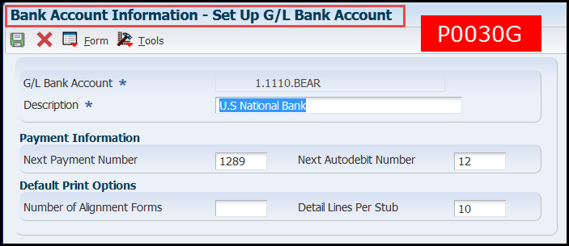
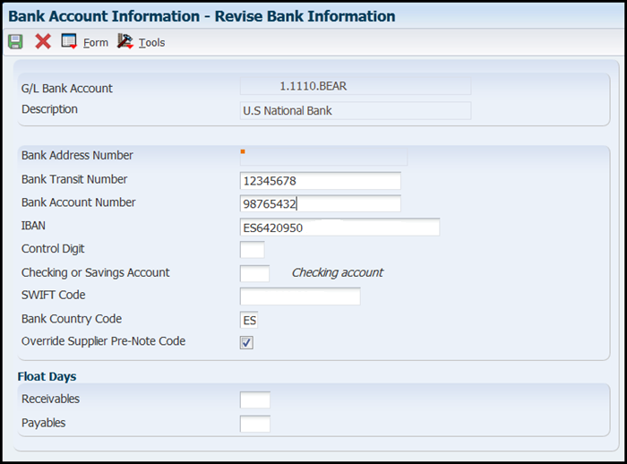

| Purpose |
| Troubleshooting Steps |
| GL Bank Account Set Up (P0030G) |
| Set Up AAI Default for GL Bank Account |
| How To Set Up Multiple GL Bank Accounts |
| How to Change a Default GL Bank Account |
| Troubleshooting Error(s) |
| Error: "Unique Key Error" |
| Frequently Asked Questions |
| Question 1: Although the record reservation for the F0030 table is turned on in UDC 00/RR, why does the Record Reservation function not work on P0030A? |
| Question 2: On what programs does this function work when the record reservation for the F0030 table is turned on? |
| Question 3: Is it possible to set up different GL Bank Accounts based on Payment Instrument? |
| Question 4: Is there a way to upload bank information in the bank transit master file (F0030) for existing supplier master records? |
| Question 5: Is it okay if I delete the old/closed Bank Account information (P0030G)? |
| Question 6: Is it possible to create vouchers with a bank account that is in a company that has a different currency code as the company for which the voucher is being entered? |
| Payment Setup KM References |
This document help troubleshoot GL Bank Account (P0030G) setup and/or errors.
The AP GL Bank Account is the account the system uses when generating payments. The account must exist in the Account Master (F0901) before it can be defined in Work with GL Bank Accounts (P0030G). After adding the account in Work with Accounts (P0901), go to the Automatic Payment Setup (G04411) menu and select Bank Account Information (P0030G) and click Add.

In this first form, the following fields are available:
From the Set Up GL Bank Account (W0030GB) screen, use the Bank Info option from the Form Exit to open the Revise Bank Information (W0030GC) screen.

The following fields are accessible through the Revise Bank Information (W0030GC) form:

Automatic Accounting Instructions (AAIs) are used to determine the default GL Bank Account used for new vouchers. The default Accounts Payable GL Bank Account is determined by AAI item PB.
If you need to create multiple GL Bank Accounts to separate check runs by supplier, see the below instructions:
Before you begin, ensure that there are no payment control groups that are currently in the payment process prior to changing the default bank account. In the Work with Payment Groups application (P04571), populate the Bank Account field with the original bank account number and click Find. If any payments are in process of being paid, it is necessary to either write, update, undo or reset the payments. Once this is complete, to change the default Bank Account information, follow the steps below:
Scenario: Why does G/L Bank Accounts (P0030G) set a "Unique Key Error" when trying to add new GL bank accounts to the Bank Transit Master (F0030) table via P0030G?
Solutoin: This error is due to the F0030 either missing in the P00022 or the Next Number value for F0030 in P00022 being lower than the highest value for Unique Key ID (UKID) in the F0030. Without a record for the F0030 in the P00022, P0030G will create one record with a blank in the UKID field but then sets the 'Duplicate Key" or "Unique Key" error on any subsequent records that you try to enter.
To verify and correct this, please do the following:
Answer 1: Adding a table in UDC 00/RR will not reserve any records belonging to that table when performing any action. UDC 00/RR is an option given to the user to enable or disable record reservation on that table, so that if an application's code wants to reserve a record on F0030, it will check if the user has enabled record reservation on that table and will write records to the Record Reservation table (F00095). However the reverse case is not true. Simply adding a record in the UDC table will not add records into the F00095 Records Reservation table when that particular table's records are processed unless there is specific applications logic coded for it.
Answer 2: There are several programs that contain the logic to add records in F00095 on accessing F0030. One application which commonly reserves the F0030 table is the Check Write Sequencing application (P04572) which is called when writing the check through the Work with Payment Control Groups (P04571).
Answer 3: This functionality is not available in EnterpriseOne. Payment Instruments are used only to specify the Print Programs that are used when writing payments. The GL Bank Account field in Work with Payment Instruments (P0417) is used to further distinguish the Print Programs that should be used for a specific payment. For example, you have vouchers set with a Payment Instrument (PYIN) of S and Bank Account 1, it will look in the F0417 for a Payment Instrument that has this GL Bank Account defined and this Payment Instrument type to determine what print program to use. If no records match, it then searches just for that Payment Instrument. The Bank Account being selected for the Vouchers is determined by the PB AAIs. If you know in advance which Suppliers may be using one Payment Instrument versus another, you can define a GL Offset in the Supplier Master record (P04012) that would then be used by the system to determine which AAI to use, and subsequently, which bank account to use. For example, you could have suppliers with a GL Offset PINS in the Supplier Master and an AAI PBPINS that points to Bank Account #1. That way, when creating vouchers for these suppliers the desired bank account and payment instrument is being used. Then you would define a different GL Offset for Suppliers who will be assigned a different payment instrument (such as PINW). Then have a PBPINW AAI that points to Account #2. Another possibility, is to instruct users to include Speed Status Change (P0411S) in the Payment Process, so using this application they locate vouchers for different payment instruments and adjust the vouchers to the desired Bank Account based on the Payment Instrument.
Question 4: There is no standard batch upload program available to upload bank account information. Either the information is entered manually or a custom program can be created to upload the information to the F0030.
Answer 5: There are no repercussions involved in deleting an old or closed bank account from the Bank Account Information (P0030G) application as long as there are no open transactions in the system linked to the bank account.
Answer 6: Currently the system will not allow the creation of a voucher with a bank account that is in a company that has a different currency code as the company for which the voucher is being entered. And this is even if the bank account is a monetary account with the same currency code as the voucher's transaction currency code. Enhancement request ER 26948527 - ALLOW MULTICURRENCY INTERCOMPANY BANK ACCOUNTS IN P0411 Has been entered requesting this functionality
Troubleshooting Payee Control
Troubleshooting Payment Instrument and Print Program Set Up and Errors (P0417)
Troubleshooting GL Bank Account Set Up (P0030G)
Troubleshooting Print Sequence Set Up (P0415)
FAQ - Frequently Asked Questions Regarding Payee Control Within EnterpriseOne Accounts Payable (X0450/P0450)